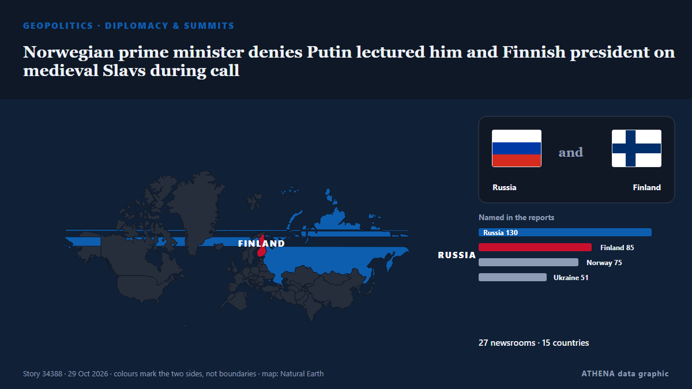

Norwegian prime minister denies Putin lectured him and Finnish president on medieval Slavs during call

The Finnish president says Europe needs new security structures to keep peace in this “a dog-eat-dog world.” من Politico Europe
نشرته بشكل مستقل 27 مصدرًا في 15 دولة منذ 26 أكتوبر، وأول من نشره Politico Europe؛ والتغطية تتراجع. يقدّر ATHENA الخطر بأنه متزايد (6.0/10)، ويعود ذلك أساسًا إلى خطورة الضرر الموصوف ونطاقه الجغرافي والقطاعي. الثقة 91٪ (مرتفعة)، وعدد المصادر المستقلة المؤكِّدة: 27، بمتوسط موثوقية للمصادر يبلغ 77٪.
لماذا يهم: بدأ الغزو الروسي الشامل لأوكرانيا في فبراير 2022. تتابع هذه الصفحة المعارك والضربات على البنية التحتية والدبلوماسية المحيطة بالحرب كما تغطيها وسائل الإعلام حول العالم.
ما الذي تغيّر: 6 تقارير جديدة من 5 غرف أخبار خلال 24 ساعة حتى 29 أكتوبر.
العنوان الأول: Finnish president, Norwegian PM hold phone call with Putin
تُعرض العناوين بالإنجليزية كما نُشرت.
نظرة سريعة
اختير وقُيِّم وكُتب وفق منهجية ATHENA المنشورة. لا يتدخل أي محرر في الأحداث بعينها. كيف يُنتَج ›
| 26 Oct 16:16 UTC | 1 |
|---|---|
| 26 Oct 19:16 UTC | 0 |
| 26 Oct 22:16 UTC | 0 |
| 27 Oct 01:16 UTC | 0 |
| 27 Oct 04:16 UTC | 0 |
| 27 Oct 07:16 UTC | 9 |
| 27 Oct 10:16 UTC | 25 |
| 27 Oct 13:16 UTC | 7 |
| 27 Oct 16:16 UTC | 4 |
| 27 Oct 19:16 UTC | 0 |
| 27 Oct 22:16 UTC | 0 |
| 28 Oct 01:16 UTC | 3 |
| 28 Oct 04:16 UTC | 1 |
| 28 Oct 07:16 UTC | 1 |
| 28 Oct 10:16 UTC | 1 |
| 28 Oct 13:16 UTC | 0 |
| 28 Oct 16:16 UTC | 0 |
| 28 Oct 19:16 UTC | 1 |
| 28 Oct 22:16 UTC | 0 |
| 29 Oct 01:16 UTC | 0 |
| 29 Oct 04:16 UTC | 0 |
| 29 Oct 07:16 UTC | 2 |
| 29 Oct 10:16 UTC | 0 |
| 29 Oct 13:16 UTC | 0 |
| 29 Oct 16:16 UTC | 2 |
| 29 Oct 19:16 UTC | 1 |
| 26 Oct 16:21 UTC | 1.0 |
|---|---|
| 27 Oct 09:54 UTC | 2.8 |
| 27 Oct 10:08 UTC | 5.3 |
| 27 Oct 10:53 UTC | 6.8 |
| 27 Oct 17:30 UTC | 7.5 |
| 28 Oct 01:45 UTC | 6.5 |
| 28 Oct 10:07 UTC | 6.3 |
| 29 Oct 20:40 UTC | 6.0 |
لماذا هذه الأرقام
الأهمية
الخطر
الثقة
التغطية — من نشر الخبر ومتى
العنوان كما نُشر · يفتح الأصل- Politico Europe · بلجيكا · BelgiumEurope is living in a new ‘era of darkness,’ Finland’s Stubb warns
- AzerNews · أذربيجان · AzerbaijanAlexander Stubb includes Azerbaijan among countries that could join EU in future
- APA (English) · أذربيجان · AzerbaijanKremlin confirms Putin held phone talks with Finnish and Norwegian leaders - UPDATED
- Ukrainska Pravda (English) · أوكرانيا · UkraineFinnish and Norwegian leaders call Putin, then Zelenskyy
- The Straits Times · سنغافورة · SingaporeTwo Nordic leaders urge Putin to end Ukraine war in rare direct contact by Europeans
- Yle News (alternative feed) · فنلندا · FinlandStubb says peace efforts back on track following phone call with Putin
- Politico Europe · بلجيكا · BelgiumLeaders of Finland and Norway hold direct talks with Putin
- Meduza (English) · روسيا · RussiaFinnish and Norwegian leaders spoke with Putin by phone about ending war in Ukraine
- Yle News — page reader · فنلندا · FinlandStubb, Støre hold phone call with Putin
- Euractiv · بلجيكا · BelgiumPutin called by Finland and Norway
- Kyiv Independent · أوكرانيا · UkraineNorway, Finland call Putin ahead of potential Abu Dhabi peace talks
- The Moscow Times · روسيا · RussiaFinnish, Norwegian Leaders Call Putin Ahead of Ukraine Peace Talks
- Helsinki Times · فنلندا · FinlandStubb and Støre call Putin ahead of Abu Dhabi peace talks
- ProtoThema English ·Putin holds direct talks with the leaders of Finland and Norway on ending the war
- Ukrainska Pravda (English) · أوكرانيا · UkrainePutin spoke with Stubb and Støre on "root causes" of war and Northern European stability
- TASS (English) · روسيا · RussiaWhat we know about Putin’s call with Norway’s prime minister, Finland’s president
- Ukrainska Pravda (English) · أوكرانيا · UkraineZelenskyy shares details of call with Finnish and Norwegian leaders after their talks with Putin
- Ukrinform (English) · أوكرانيا · UkrainePresident Stubb, Prime Minister Støre hold phone call with President Putin
- AzerNews · أذربيجان · AzerbaijanFinnish president, Norwegian PM hold phone call with Putin
- Ukrainska Pravda (English) · أوكرانيا · UkraineFinnish president reports on conversation with Zelenskyy after call with Putin
- Ukrainska Pravda (English) · أوكرانيا · UkraineDanish PM sceptical about Finnish and Norwegian leaders' call with Putin
- TASS (English) · روسيا · RussiaStubb and Store did not coordinate phone talk with Putin with Europeans — Danish PM
- Anadolu Agency (English) · تركيا · TurkeyPutin discusses Ukraine settlement with Finnish counterpart, Norwegian premier
- Anadolu Agency (English) · تركيا · TurkeyDenmark voices 'skepticism' after Finnish, Norwegian leaders’ calls with Putin
- TASS (English) · روسيا · RussiaPutin, Stubb, Store agree to maintain direct telephone contacts — Kremlin
- Bangkok Post — page reader · تايلاند · ThailandNorwegian, Finnish leaders hold ‘frank’ talks with Putin
- Free Malaysia Today · ماليزيا · MalaysiaLeaders of Norway, Finland hold calls with Putin then Zelensky
- Ukrinform (English) · أوكرانيا · UkraineZelensky talks to Stubb and Støre after their call with Putin
- Kyiv Post · أوكرانيا · UkraineKremlin Reiterates Moscow Invitation to Zelensky After ‘Frank’ Discussion With Finnish, Norwegian Leaders
- Anadolu Agency (English) · تركيا · TurkeyZelenskyy speaks with Finnish president, Norwegian premier following their call with Putin
- TASS (English) · روسيا · RussiaPutin discussed Ukrainian crisis settlement with Finland’s Stubb, Norway’s Store — Kremlin
- Xinhua (English) — page reader · الصين · ChinaFinnish president, Norwegian PM hold phone call with Putin on Ukraine conflict
- ANSA English · إيطاليا · ItalyEU must choose who represents it on Kyiv, mustn't act separately - Chigi sources
- ANSA English · إيطاليا · ItalyEU must choose who represents it on Kyiv, mustn't act separately - Chigi sources
- TASS (English) · روسيا · RussiaNorwegian PM says his call with Putin was substantive, professional
- Al Jazeera English · قطر · QatarRussia targets Kyiv as Finnish, Norwegian leaders hold rare call with Putin
- Ukrainska Pravda (English) · أوكرانيا · UkraineFinnish president says Ukraine was involved in preparations for call with Putin
- Cyprus Mail · قبرص · CyprusLeaders of Norway and Finland call Putin in break with previous European stance
- The Hill · الولايات المتحدة · United StatesFinland's Stubb and Norway PM call Putin in break with previous European stance
- TASS (English) · روسيا · RussiaStubb says his call with Putin was arranged jointly with US, Ukraine